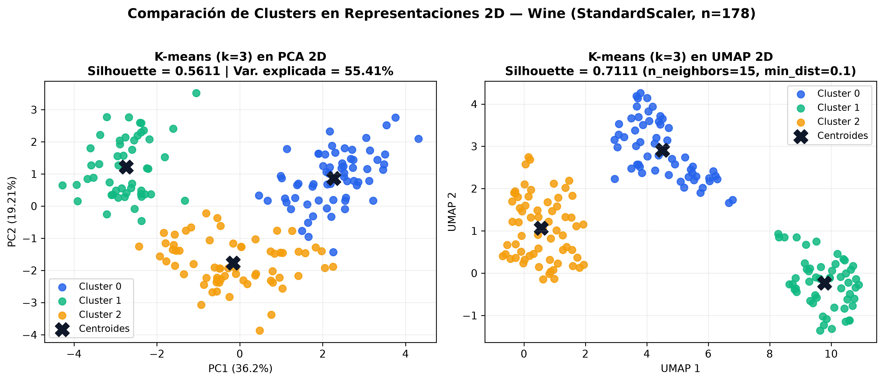
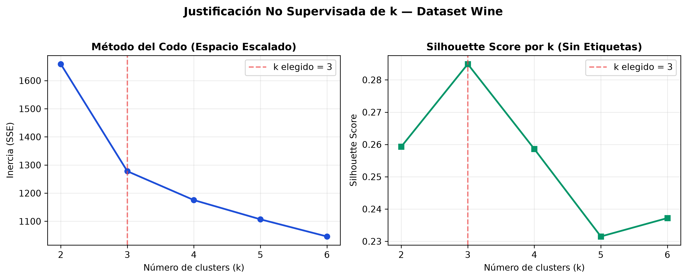

178 muestras · 13 variables fisicoquímicas continuas (StandardScaler)
Justificado por codo de inercia y máximo Silhouette en el espacio escalado (0.2849)
Proyección lineal · Retiene 55.41% de la varianza explicada total
Proyección no lineal · Grupos altamente densos y compactos
Evidencia Cuantitativa: PCA 2D vs. UMAP 2D
K-means con el mismo k=3 en ambas representaciones (n_init=20, random_state=42)
| Representación 2D | k | Silhouette Score (Métrica Interna) | Inercia 2D | ARI (Comp. Externa) | NMI (Comp. Externa) |
|---|---|---|---|---|---|
| PCA 2D (Lineal) | 3 | 0.5611 | 259.5094 | 0.8951 | 0.8821 |
| UMAP 2D (No lineal) | 3 | 0.7111 | 202.2043 | 0.8025 | 0.7955 |
Visualización de Clusters: PCA 2D vs. UMAP 2D
Clusters asignados por K-means (k=3) y sus centroides (marcador X negro).

Justificación No Supervisada de k
Método del codo (inercia) y curva de Silhouette en el rango k=2..6 sin etiquetas.

¿Cómo influye la representación en los patrones que vemos?
La representación actúa como un filtro que define qué relaciones geométricas se preservan. Mientras que PCA proyecta linealmente buscando maximizar la varianza global (dejando clusters cercanos y fronteras difusas con Silhouette 0.5611), UMAP modela la topología local formando islas densas y aisladas que elevan el Silhouette Score a 0.7111.